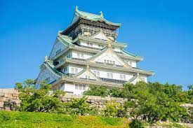
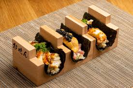

GildongH_365
게시글 19

진짜 진심 또 오고 싶었다ㅠㅠ 나 궁궐, 성 이런 거 겁나 좋아하잖아. 가자마자 1박하고 일찌감치 오사카 성 보러 나갔는데... 아니 왜케 멋짐? 날씨가 찐이라 그런가? 생동감 대박이었음. 레알 에도시대 온 줄ㅎㅎㅎ 혹시 성벽 뒤에 사무라이 있나 살핀 1인ㅋㅋㅋ
내 여행기록

역행자의 오사카 맛집탐험
일본 오사카
2024.02.15 ~ 02.27
댓글
아이디
댓글 내용